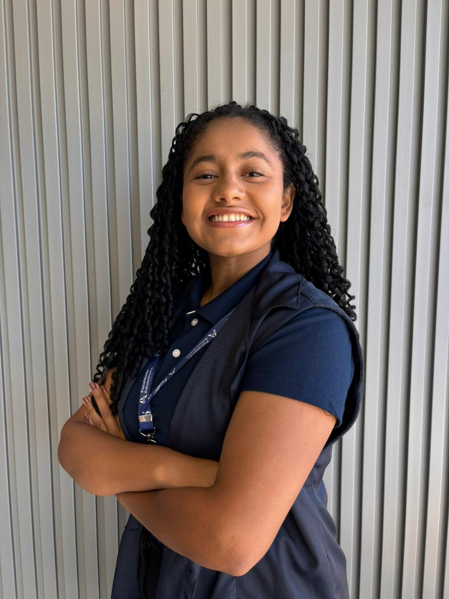
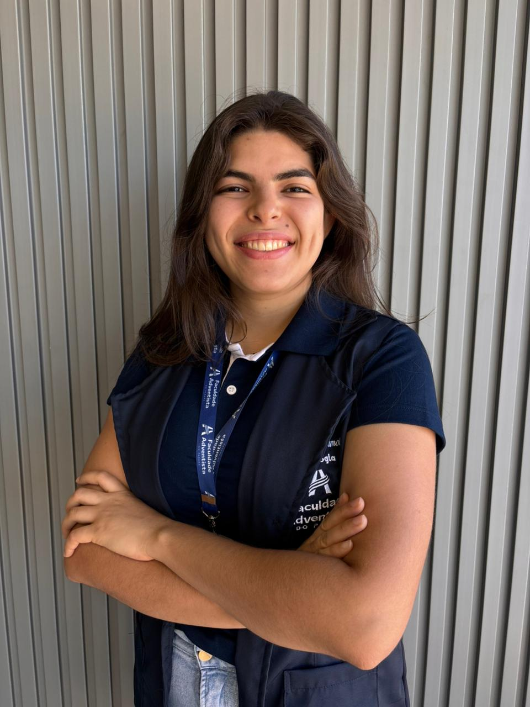
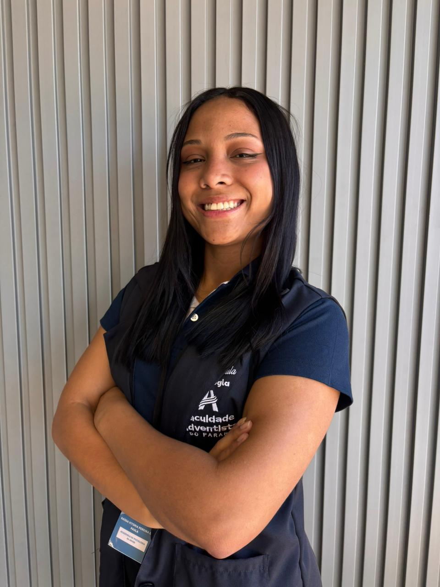

Nossa Equipe
Prof. Marcelo Augusto Pirateli
Responsável pela coordenação geral do projeto, orientação pedagógica e acompanhamento do desenvolvimento de todas as fases do jogo. Com vasta experiência em educação e psicologia escolar, lidera a equipe na criação de metodologias eficazes para o combate ao bullying.
Estagiários

HELAINE REGINA SANTOS SILVA
Responsável pela mediação entre o grupo e o coordenador de estágio em momentos que não a supervisão semanal.
ALEXANDRA DE
LIMA GUEDES
Concebeu as cartas que lidam com a fase do bullying verbal: identificando, debatendo e propondo reações positivas a insultos, apelidos e agressões verbais.
ALIREZA
KHAZFOROOSH
Projetou os elementos interativos e digitais da fase de cyberbullying — incluindo pistas, QR-codes, registro de evidências e a mecânica do impostor.
ESTHER
PARTELLI TAVARES
Desenvolveu o layout e ilustração da fase do bullying físico, com mímicas, desenhos e tarefas que envolvem os participantes em situações reais de agressão e intervenção.

KAREN ANGÉLICA
GOIS OKAMOTO
Elaborou cartas que apoiam a transição de vítimas e/agressores para atitudes cooperativas, respeito e empatia — aplicáveis nas fases verbal, física e virtual.
MARIA EDUARDA
DOS REIS GOMES
Tongiu a harmonia estética entre tabuleiro, cartas e tarefas, assegurando a consistência visual entre as três fases do jogo (verbal, física e cyber), reforçando o tema da convivência saudável.

RAISSA VITÓRIA
PEREIRA DE PAULA
Criou os cenários de jogo (situações, tarefas de mímica/desenho, charadas) — por exemplo, atuar nas cartas-tarefa da fase física ou as charadas da fase virtual — para provocar reflexão e participação ativa.
SARAH FERREIRA
ALMEIDA RODRIGUES
Criou atividades e perguntas que incentivam os jogadores a pensar sobre as causas e consequências do bullying, promovendo a empatia e o diálogo ao final de cada fase do jogo.